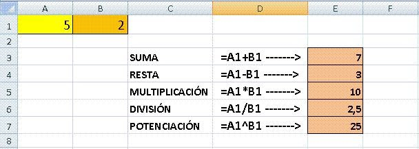

Los procesadores de texto que se utilizan como interfaz cuando tipeamos una producción escrita en la computadora -como por ejemplo Word de Microsoft Office o Docs de Google- permiten editar y dar formato a nuestros trabajos a través de herramientas prácticas y sencillas
Las cuatro operaciones básicas son : suma, resta, multiplicación y división. Las operaciones básicas en una hoja de cálculo son las aritméticas conocidas: suma, resta, multiplicación y división